Published: 2023-11-06
Original link: https://www.cnphotos.net/academy/show-157.html
■ Interviewee | Shu Hongping
■ Reporter | Zhang Yue
■ Editor | Zhou Yimeng
■ Editor-in-chief | Chen Xiaojun
The cnphotos.net Top Ten Photographer award selects the best photographic work of each year. It encourages and honors photographers who achieve outstanding results in artistic photography. It motivates photographers to create more work. The work should reflect the voice of the new era, show the struggle of the people, lift up the national spirit, and refine noble feeling.
The 2022 (5th) cnphotos.net Top Ten Photographer selection went through several steps. These included a display of selected work, a public vote, a final review by a committee of famous photographers and scholars, and a public notice. The process chose the Top Ten Photographers and the nominees for the year.
To show the classic work and creative process of these photographers, cnphotos.net wants to build a richer space to display and share work. Recently, our reporters and editors will interview the Top Ten Photographers. We will tell the stories behind their work. We will later publish a collection of the Top Ten Photographers.
This issue features an interview with the photographer Shu Hongping.
Editor's note
Preface
When photography first came to China, the photographers in portrait studios became the earliest major force in the development of Chinese photography. The studio images with Chinese character also became a unique sight in the history of world photography. Shu Hongping comes from a portrait-studio family. Three generations of his family have worked in photography. A case study of his family's Rongjing Portrait Studio would show, through its rise and fall in the tides of time, a long stretch of national and family history.
Shu Hongping's parents lived through the chaos of the War of Resistance against Japan. They also lived through the Liberation War, and they contributed to the War to Resist US Aggression and Aid Korea. After society slowly stabilized, they lived through the Socialist Transformation of the 1950s. This movement changed the path of traditional private portrait studios. It also made his family's studio collective property. As early as 1978, Shu began to publish many images that showed the social development of the time, and the farming, forestry, animal husbandry, and sideline work of the era. After reform and opening up, the physical form of some traditional studios still existed, but their inner spirit had changed completely. In 1984, Shu entered the photography program of the journalism department at Jiangxi University. In terms of time, he can be placed among the first generation of Chinese photographers after reform and opening up.
Shu inherited his father's care for public life. From his own sense of history, his images often weave together the key events of the individual, the family, and the nation. He records without a break. As times change and technology develops, the materials of photography change. Shu moved from film to digital, and from black and white to color. His subjects also grew from recording his Gao'an hometown to city life. He has photographed for decades. Time changes, his style changes, and the clothes and expressions of people change. After enough years, those precious photos belong not only to the individual. They are also the memory of an era.
The father photographed fifty thousand families, and the son photographed for fifty years. Shu Hongping's family history of the studio records the golden years. It also preserves the visual memory of love for family and country.
Zhang Yue
November 6, 2023
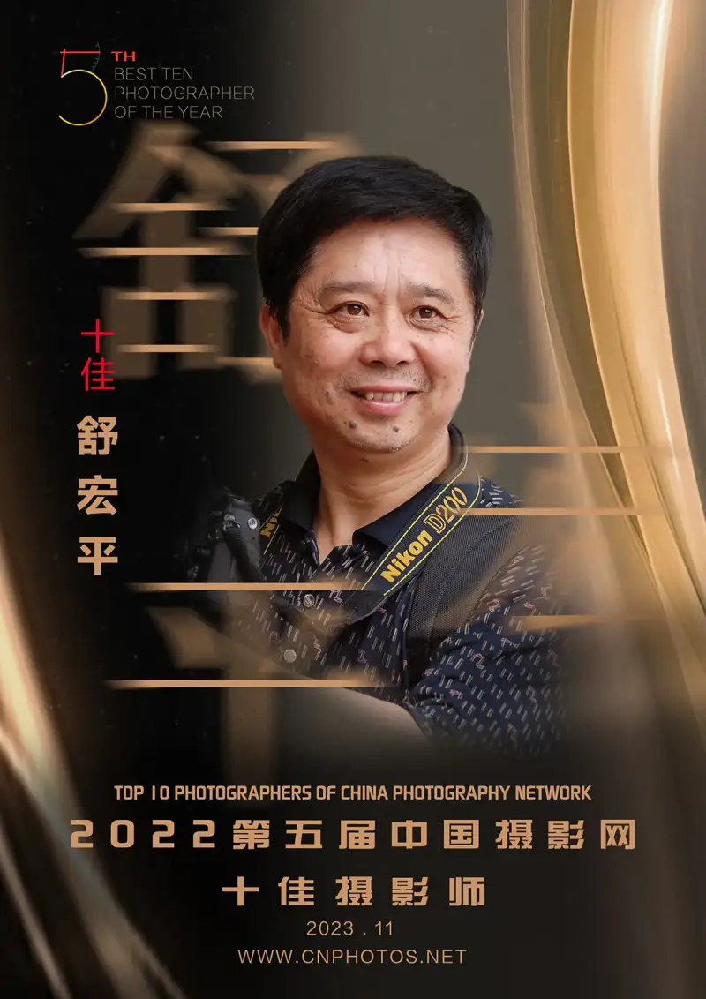
Shu Hongping is from Gao'an, Jiangxi Province. He is a member of the China Photographers Association, a member of the Jiangxi Photographers Association, and a signed photographer of cnphotos.net.
He loved photography as early as the 1980s, and most of his work has been related to photography. He watches how people live on this land. He observes the joys and sorrows of ordinary people around him. He often faces the hot sun, braves wind and rain, waits for dawn, and sees off the sunset. He tries to find, discover, and catch the beauty of life in the ordinary. Photography has become part of his life. He enjoys the happiness it brings and has also gained some reward. He has won nearly a hundred awards in national and provincial photography contests.
cnphotos.net reporter Zhang Yue (hereafter Zhang Yue): What kind of environment did you grow up in? How did you first become connected to photography?
cnphotos.net Top Ten Photographer Shu Hongping (hereafter Shu Hongping):I grew up in a family with a strong photographic atmosphere. For me, photography is both instinct and love, and it holds feelings I cannot fully explain. My parents worked in a portrait studio. My father mainly took photos. My mother handled darkroom developing, printing, and enlarging. My home was inside the studio. From childhood I was surrounded by it. I remember that when I needed my mother, I went into the darkroom. Under the red safe light, I watched the photo paper in the developing tray slowly show a human figure. I was very curious and did not want to leave. Later, when I finished primary school, the Cultural Revolution began and classes stopped. I spent my time in the darkroom, watching my mother develop film and print and enlarge photos. Sometimes I went to the countryside with my father to take portraits. I slowly fell in love with photography, and I have been bound to it ever since.
Zhang Yue: What did your parents do? Can you tell us your family story?
Shu Hongping:My father Shu Weiquan was from Xuluo Village, Sanjiangkou, Nanchang County, Jiangxi. Because the family was poor, he attended school on and off until the third grade. He stopped because he could not pay the fees. In 1939, my father was only 13. Through a relative's introduction, he went to the Qingqing Portrait Studio in Ji'an as an apprentice. Before he left, my grandmother gave him one silver dollar. He was young, weak, and knew nothing. By day the boss set him to hard labor and never let him learn the craft. Sometimes my father slipped into the darkroom to watch the masters print photos and develop film. The kind masters secretly taught him the key points of the darkroom. My father also rose early and worked late. When the boss rested or went out, he entered the darkroom to learn. At night he brought back poorly printed photos to study and compare. He also covered the light with a paper shade so the boss would not find out.
At the end of 1940, after two years of apprenticeship, my father went to the Baoguang Portrait Studio in Taihe. He was eager to learn and worked quickly. Every day before work he washed the masters' trays and mixed the developing and fixing solutions ahead of time. The masters taught him that the key to printing is to control the exposure time and the developing time of the paper, and to adjust for the changing temperatures of the four seasons. Under the careful guidance of two masters and through his own hard work, my father finally mastered taking and printing photos. In 1944, the Japanese army invaded southern Jiangxi. In an air raid, a bomb destroyed more than half of the studio building. The boss was also killed. The studio could not keep running and was forced to close.
The times were chaotic, and my father was homeless. The boss of the Rongjing Portrait Studio in Taihe had also died in the war. The studio could hardly survive and needed hands. Through an introduction, my father went to the Rongjing Studio. They had only one condition: my father had to marry their eldest daughter. Because of the war, my father hid from place to place and had no other choice. He agreed and became a son-in-law who moved into the bride's home. In 1946, my father married my mother and lived with my grandmother. Together they held up the family.
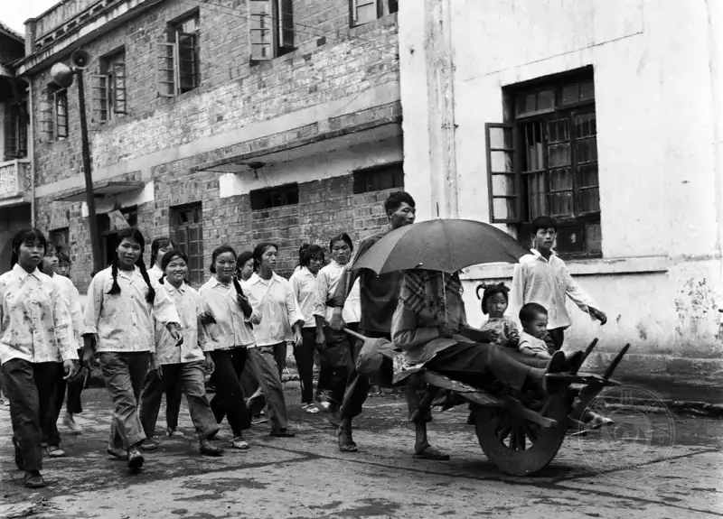
In 1985, in Huayuan Village, Huibu Township, Uncle Xiong Ming married off his daughter. Red flags and gongs and drums led the way. The bride sat on a goat-horn cart. She wore a flowered veil and held a big red umbrella. A pair of golden boy and girl also sat on the cart, and a crowd of childhood relatives and friends escorted the wedding.
In 1949, my father finally decided to move back to Gao'an, Jiangxi. He set up the Rongjing Portrait Studio again on Gao'an South Street. After Gao'an was liberated, society slowly stabilized. More and more people appeared on the streets, and the portrait business grew. My father took the photos. My mother handled printing and coloring. My grandmother ran the shop. My father worked with great care, had strong skill, and gave good service. He had a fine reputation across Gao'an, and the business grew more and more prosperous.
Zhang Yue: How many years did your family studio run? During the Socialist Transformation, your Rongjing Studio, run for many years, was suddenly made public and renamed the Gao'an Portrait Studio. What was your parents' attitude at the time?
Shu Hongping:My father's in-laws ran the Rongjing Studio for 13 years. Later, my father and his mother-in-law ran it in Gao'an for another 11 years. My father was a warm-hearted man. He took an active part in community public activities. He went to the streets to promote the movement to resist US aggression and aid Korea. He organized people to donate money and goods to support the front and protect the country. Mei Chengyu, the district head, saw that my father worked carefully and actively. He encouraged my father to take part in revolutionary work, and to go with him to the countryside to mobilize people and keep the economy stable. My father stood out. He was elected deputy head of the Third Street and head of security. He worked day and night to settle disputes and keep order. He was very busy and had little time for the family studio. The street post had no salary, and the family held him back, because he had to feed them. My father was young and bold then. He actively contributed to society and often took part in the socialist drive to conquer nature. Once, with a man from the public security bureau, he went to the remote Wuqiao township in the mountains to hold a public meeting. The meeting had barely begun when bandits opened fire. It was very dangerous that day. My father said he was almost killed by the bandits. In 1956, during the Socialist Transformation, the whole family answered the call of the organization. The Rongjing Studio joined the cooperative as a handicraft worker. They valued their camera, backdrops, and printing tools at 480 yuan as their share. My parents became members of the city handicraft service cooperative. From then on, the Rongjing Studio was renamed the Gao'an Portrait Studio.
Zhang Yue: I saw many photos your father took online, including many large scenes. Both the image quality and the composition are strong. Did he run the studio and do his own photographic work at the same time? Did your father leave many negatives? Are they well kept? Old photos like these are popular with museums and collectors now. What will happen to your father's photos?
Shu Hongping:My father worked carefully, gave good service, and kept refining his craft. He required himself to take a good portrait for every customer. He worked out a method: set the camera position by the shape of the face, choose the angle by whether the person is thin or heavy, use the light ratio to hide physical flaws, and catch the expression in a relaxed mood. He became a bit known in the county. At the time the county had no full-time photographer. Whenever a large event or central task needed photos, people came to the studio to ask my father to shoot. In the winter of 1958, 100,000 laborers worked on the Shangyou Reservoir in Gao'an in a big water-conservancy campaign. My father was sent to the site publicity group. He used photos on the bulletin board to show the progress of the work. He used models of progress and good deeds to raise morale, and showed in a direct visual way the heated scene of cadres and workers fighting nature. One day, a photographer from the Yichun Daily came to report from the site. My father was fascinated by new things, so he followed closely. He asked, with an open mind, how to submit news photos to newspapers. He studied hard, overcame difficulties, tried again and again, and shot carefully. At last his news photos of the Shangyou water project appeared in the Yichun Daily. From then on he never stopped. He often exchanged letters with photography teachers at the provincial and regional newspapers, learning from them. He took photography training classes held by the papers. He developed a news eye and promoted new people, new deeds, and new customs. While running the studio, he also served as a voluntary publicist for the government. Over the years, the Jiangxi Daily and Yichun Daily named him an excellent correspondent.
Image
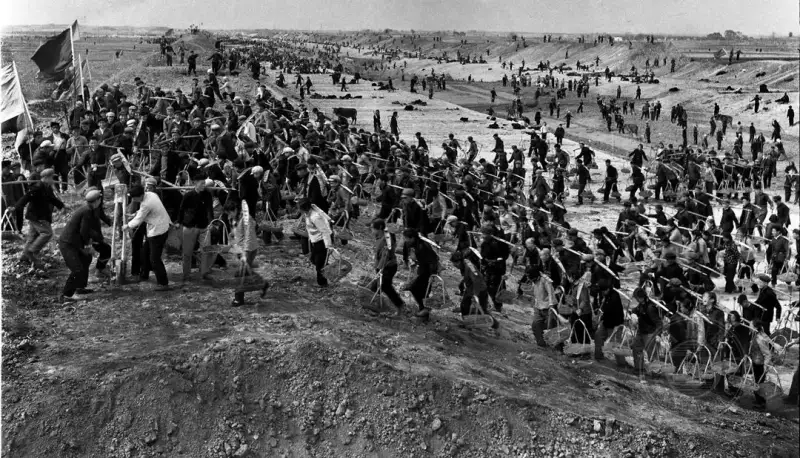
"The Great Water-Works Campaign"
Winter 1978. In the Xiao River basin of Gao'an County, a big campaign to kill snails, control water, and improve fields began. On the site, laborers raced each other to get ahead and finished the projects on quality and on quantity. Gao'an became the first county in the province to basically eliminate schistosomiasis.
In the 1960s and 1970s, my father was the local reporter for the county party committee and government. He recorded large amounts of history for the water-conservancy campaign, for the provincial In Agriculture Learn from Dazhai Gao'an exhibit, and for the Memorial Hall of Chairman Mao's Revolutionary Activities in Gao'an. Especially on December 8, 1984, the General Secretary of the Communist Party of China visited Gao'an and posed for a group photo with more than 100 leading officials of the party, government, and army. The secretary traveling with him asked for the photo to be taken in eight minutes. When the General Secretary sat down, my father noticed he was somewhat short. Sitting in the middle of the row, he did not stand out, and the line looked uneven. My father acted fast. He took off his own cotton vest and was about to put it under the General Secretary. Security guards stepped forward to stop him. My father made a gesture to the General Secretary, who smiled with understanding. Only then did the guards take the vest from him. The group photo that came out was both even and good-looking. After the photo, my father walked over to the General Secretary to take back the vest. The General Secretary kindly asked how many years he had taken photos. My father said he started at 13, more than 40 years ago. The General Secretary said his camera was too old and he should buy a new one. The county party secretary on the spot, Zhai Shida, at once promised to set aside 10,000 yuan for a camera. My father often said that the General Secretary's kind smile and his care for the people's hardships always push him forward.
My father shot more than 100,000 negatives of Gao'an. Unfortunately, some old photos were lost for various reasons. Only a tiny few remain. Some of the old photos are kept in the Gao'an Archives.
Zhang Yue: I see that as early as 1978 you began to take and publish photos, and you published many 1980s works that showed social development and farming, forestry, animal husbandry, and sideline work. These works have a strong period feel. Please tell us how you took up photography. In what role were you shooting those scenes?
Shu Hongping:In October 1978, the Jiangxi Daily published my first news photo. It showed the patriotic health campaign in a Gao'an village, centered on killing pests and preventing disease. In the second issue of 1982, Popular Photography published my first art photo, Inch by Inch of Time. In the 1970s and 1980s, the spring wind of reform and opening up warmed the land of China. After I finished high school in 1974, I had already mastered photography. In early 1975, the county publicity department pulled me in to help build the Memorial Hall of Chairman Mao's Revolutionary History in Gao'an and the Gao'an Exhibition of Results in Learning from Yujiang in Schistosomiasis Prevention. I completed the photography well. After the exhibit work, I was moved to the cultural center as a full-time photographer. My task was to focus on the central work of the county party committee and government, and to shoot and promote new people, new deeds, and new customs in urban and rural economic development. Gao'an is a large agricultural county. The countryside and farming were my world to shoot. The ordinary people and events of my neighbors, their production, their daily life, and their living conditions all entered my lens. I spread them in print, with both pictures and text, familiar and easy to understand, telling the stories of that era. The photos are full of the earthly feel of daily life. They carry the warmth and feeling of social and economic development. People's way of producing and living changed as reform and opening up went forward.
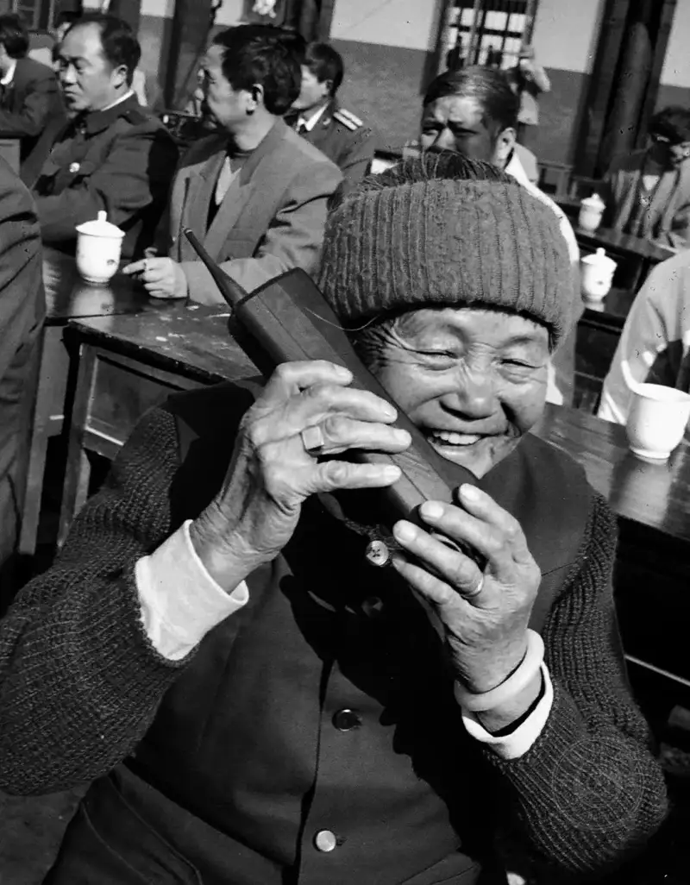
"Our Village School Is Built", December 1, 1996
At the completion ceremony of the Weijia Primary School in Lanfang Township, Gao'an, the crowd rejoiced. Aunt Jin sat on the stage and happily sent news to her son in the army: our village school is built. Last year, when Aunt Jin's son came home on leave, he saw the village school was old and bare. He launched a crowdfunding campaign to build a school, and at once donated 1,000 yuan himself. With the support of people from all walks of life, they raised more than 300,000 yuan and built a spacious, bright three-story teaching building.
(Published on page 9 of the People's Daily, December 2, 1996)
Zhang Yue: As early as 1984 you entered the journalism photography program at Jiangxi University. This was ahead of its time. Why did you choose to study photography then, instead of another major that might help your career more?
Shu Hongping:In early 1984, the Jiangxi Photographers Association and the journalism department of Jiangxi University set up a photography training class. It trained local cultural workers and amateur photographers. It recruited nationwide, and students took the unified adult college entrance exam. I prepared carefully, reviewed hard, took a culture-exam training class, and entered the university. I was lucky for my times. I treasured this chance. I studied culture and photography hard and in a system, raised my professional skill, and lifted my artistic feeling. Photography is what I love most, and it is my lifelong work. The teaching and nourishment of my parents in photography deeply shaped me. At university I did not think about chasing the tide of going into business to make big money. After graduation, I still carried my camera and ran across the broad land of my home.
Zhang Yue: Leaving aside the quality of the images, in terms of time alone I think you can be placed among the first generation of Chinese photographers after reform and opening up. How do you see yourself?
Shu Hongping:To call me a first-generation photographer after reform and opening up is too much praise. I truly do not deserve it. At the time the country badly needed to train professional photographers, so it ran classes together with universities. The Jiangxi University photography class was the second in China after the Renmin University of China photography class. I grew up in a photography family, so I had the natural conditions to learn. I had the right time and place. To record the rivers, mountains, and local ways of my hometown is my duty. I still see myself as a local-level photographic worker.
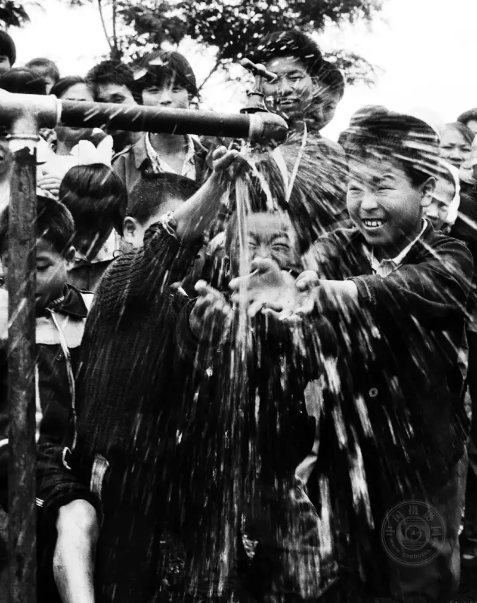
"Running Water Has Come", June 1993
The poverty-relief team of the Gao'an health bureau stationed in Tangtou Village, Jianshan Town, in the schistosomiasis area, wanted to end the villagers' history of drinking water from muddy ponds and ditches.
They raised more than 50,000 yuan from many sources and built a pumped well for tap water. On June 1, when clear spring water flowed from the tap, the villagers cheered. The dream of generations in the disease area had come true.
Zhang Yue: You have photographed for more than 50 years. Photography has become an important part of your life. Besides photography, what else do you do? What supports your photography? Can photography alone support your own creation?
Shu Hongping:Photography is the lifelong career I chose, and an important part of my life. Besides photography, I take walks and exercise. I also talk with people and make friends. Besides these, reading and study remain a major hobby.
Zhang Yue: I read media reports that over the years you have won more than 100 awards in national and provincial contests. That is a remarkable number. Can you talk about the most important award? What did it bring you? Did it change your work or life?
Shu Hongping:I like to enter national and provincial photography contests. I have won more than 100 awards. You could say heaven rewards the diligent. I think entering a contest is a chance to learn and to show yourself. You cannot admire your own photos in private. It is like a horse. You have to take it outside and let people see it. Only then do they know if it is good. Entering a contest is the same. It is a good chance for others to judge your work. If you win, you can sum up your strengths. If you lose, you can find the gap. It is a way to teach yourself and improve.
On March 8, 1984, the county women's federation held an unusual sports meet for one-child families. The scene was lively and full of joy. Right after I shot it, I enlarged the photo and sent it to provincial papers and to China Youth Daily. In those days, mailing a story to Beijing took a week, but China Youth Daily published it on March 20. It ran in the fourth Young People of the 1980s photography contest section as a large photo on the front page. At that time the paper had started putting large photos on the front page. Before, they ran only small blocks. In the end it won the annual excellent news award, and the paper wrote a review of the work called The News Is Right Beside You. That same year, this work also won second prize in the monthly contest of the fifth issue of Popular Photography. It later won excellence awards at the Chinese Folk Sports Photography Exhibition and at the 30th Anniversary of Reform and Opening Up Photography Exhibition held by China Photography News and the China Photographers Association. It won awards and was published more than 30 times. It was also one of the main works I used to enter the Jiangxi University photography class that year. It won strong recognition from the organization. Because of it, I myself received county and city titles such as excellent intellectual, outstanding individual in flood relief, and outstanding individual in rural cultural and ethical progress.
Time flows, but my original heart stays the same. Photography began as a hobby. The hobby became my career, and it shaped my life. Photography is like life. If you love it, it gives you unexpected surprises and many rewards. When you stand on the award stage again and again, it is not only a pile of honors. It makes your life busy and full. It is also a sense of satisfaction and happiness. A saying puts it well: dreams have nothing to do with age. To pursue the beautiful and walk on tirelessly is the practice of my whole life.
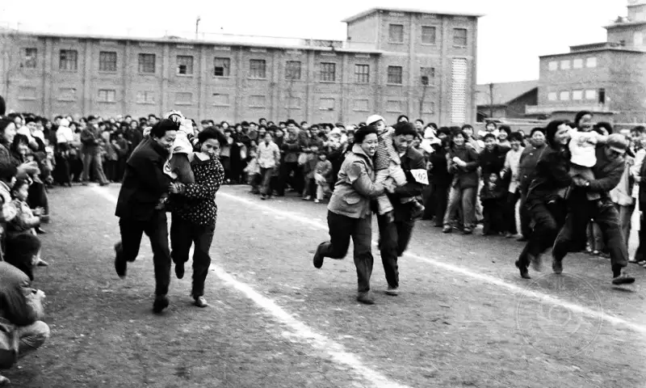
"One-Child-is-Good Sports Meet"
On March 8, 1984, the county women's federation, the family planning commission, and other departments held an unusual sports meet for one-child families. More than 50 families from various units took part. On the field, pairs of young parents crossed their arms to support their babies and raced. The scene was lively and full of joy.
Zhang Yue: When you publish work online, you also publish many of the matching negatives. Why? Are you trying to prove something? Or does it have a special meaning?
Shu Hongping:July 1, 2021 was the 100th anniversary of the founding of the Communist Party of China. There were many photography contests across the country. I dug out my stored boxes of more than 20 cartons of negatives and materials and organized them for more than three months. I had visited the Pingyao Photography Festival before. The way many works were shown was inventive, and it gave me an idea. I chose my own strengths and repositioned my work. I cut out the news photos that had run in the papers back then and placed them side by side with the negatives and digital images as one picture. This shows the feel of the era and reflects the work of most of my life. Through work I have met many people and made many friends. Behind each photo is a story, and a strong feeling for my hometown. The best way to keep grapes is to make wine. The best way to keep the years is to turn the years into poems and images. We live in an age of images. My record is only a single grain in the sea. But even one grain can leave a valuable lead for looking back later. I enjoy the way the world exists through my feeling. I also enjoy meeting myself at any time in the world of images. This is the meaning of photography for me. I never tire of it, and I want to keep shooting.
Hard work pays off. These sealed old photos had an immediate effect. Media and websites published and reposted them widely. On November 24, 2021, People's Photography ran a full page on The Transformation of Gao'an in Forty Years. On October 5, 2022, my 28-photo series Native Soil, Native Feeling was selected for the China Ethnographic Imaging Biennial and was permanently collected by the China Ethnic Museum. In 2023, this same series again made me a cnphotos.net Top Ten Photographer.
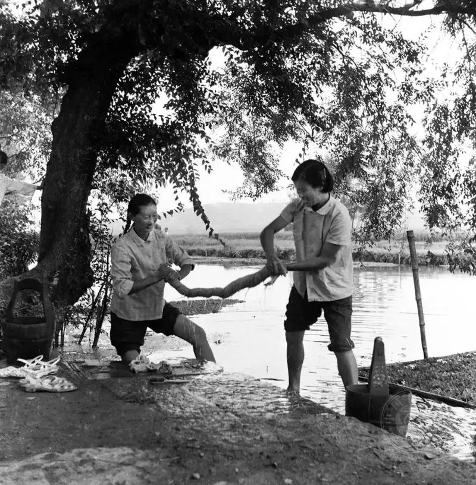
"Like Good Sisters" series
On August 12, 1982, Luo Xiaomei (first from right) and Pan Paoying, members of the Xiachenzhuang production team in Huayuan Brigade, Huibu Commune, Gao'an County, had quarreled over a small matter. For ten years they did not speak when they met. Through the Five Emphases and Four Beauties campaign, they each criticized themselves and made peace.
(Published on page 2 of the Farmers' Daily, August 12, 1982)
Zhang Yue: I like the colors your mother added to black-and-white photos. They are simple and full of period feeling. Where did your mother learn to color photos? How many years did she do this work? Do you know how many people hold photos your father took, and how many hold photos your mother colored? Can you estimate?
Shu Hongping:In the early days after liberation, except for the camera, which was a precision instrument, the equipment in my family's studio was very simple, and the methods were backward. Exposure and focus were all done by hand. The trays for developing and fixing were washbasins. At the time there was no electric light for printing. We had to crawl under the covers, line up the negative and the paper in a glass frame, expose them once at the light by the window, and then develop and fix them in the red light of an oil lamp covered with red paper. Exposure, developing, fixing, and temperature were all manual, controlled only by experience. One small mistake ruined everything. Taking photos was truly a skilled job back then. Later the studio business grew. My father used his head and set up a homemade method. He built a wooden exposure table by the window. He cut a big hole in the wall under the window and made a movable board in the middle of the table to control the exposure. He covered the window with red paper to make a red work light. This raised efficiency and cut the rate of spoiled prints.
As life improved, people wanted more beauty. Our town had a normal school. It had many students from out of town, and they were more interested in new things. My father used darkroom combination printing to add beauty to the picture. He printed local scenes of the Jin River onto life photos, and printed the school grounds onto personal portraits, and made them into postcards. They were very popular. Students often gave each other photos that combined themselves with a landscape. Later a star-chasing craze appeared. My father used his creativity again. He made three-in-one postcards of film songs, star portraits, and personal photos. People exchanged them, and it became a fashion of the time.
Then some young students asked my father to make them color postcards. This stumped him, but he was a man who loved a challenge. He at once bought books on photo coloring and watercolor paint sets, and let my mother try it step by step. He also asked an art teacher from the normal school to coach her. From mixing color, choosing color, and applying color, she learned little by little. She slowly made progress, and color postcards began to come out. To keep up with the business, my mother studied humbly and worked hard. She moved from watercolor to oil color, and her colored photos became more and more popular. She also spent three months at the Zhenzhen Studio in Nanchang to focus on oil-color hand-coloring. Her skill grew higher, and her oil-colored photos looked very real and full of period feeling. In the 1980s, my mother printed, enlarged, and colored as many as 30,000 photos. Tens of thousands of families and individuals had photos colored by my mother. My father worked in photography for more than 40 years. At least 50,000 families had photos he took.
Zhang Yue: In 1981 you shot a news photo of Xu Sizhao, a rural postman at the Xinjie Post Office in Gao'an, searching for mainland relatives for Taiwan. He visited more than 30 production teams and asked more than 50 elderly people, and finally found the recipient. This story of one family across the strait is moving. Were photos like this caught by chance, or arranged? I am curious. Can you tell us?
Shu Hongping:In 1981, China Youth Daily opened a nationwide call for the second Young People of the 1980s photography contest. I sent my news photo to the paper for that contest. It showed Xu Sizhao, a rural postman at the Xinjie Post Office in Gao'an, searching for mainland relatives for a person in Taiwan. Less than a week later, on my way to work, I heard the National Radio of China News and Press Summary program. One item reported that today's front page of China Youth Daily told the story of Xu Sizhao, the rural postman of Xinjie in Gao'an, Jiangxi, who searched for mainland relatives for a Taiwan compatriot. When I heard it, I was so happy I almost jumped.
At the time, the three links of mail, transport, and trade between the mainland and Taiwan were not yet open. The rural postman Xu Sizhao received a letter that had come via Hong Kong, but the address was unclear. He was careful and responsible. He rode his bike on the country paths and visited more than 30 production teams. He asked more than 50 elderly people, and finally found the sender's old mother. The old mother was overwhelmed when she read her son's letter. Her son Yu Shousheng had joined the army in 1949, and there had been no word from him since. His parents always thought he had died long ago in the war. They never expected that the son they thought of day and night was still alive. Between grief and joy, the old mother tightly held the postman Xu Sizhao's hand and said: thank you for finding my son for me.
Later the county Taiwan Affairs Office learned of this and asked me to go to the countryside to shoot news photos. At noon we reached the village. We arranged the scene according to how it had happened, and set off firecrackers. Yu Shousheng's old mother was still caught up in her emotion. Curious villagers gathered to watch. I at once adjusted the aperture and shutter speed, found the best camera position, and quickly caught this moving scene and moment. In that era, staged shooting was still the norm. To truly come upon such a scene would have been a miracle.
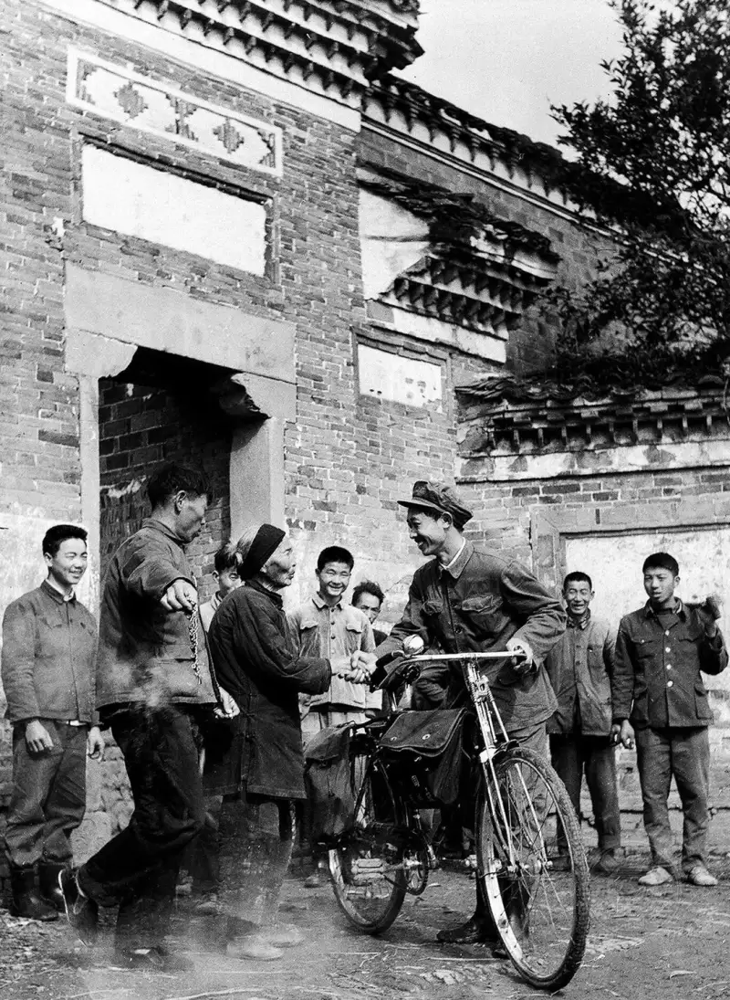
"Searching for Mainland Relatives for a Taiwan Compatriot"
March 22, 1981
Zhang Yue: You were named a Top Ten Photographer by cnphotos.net. Winning such an important award is no small thing. Can you share some contest experience with fellow photographers?
Shu Hongping:In 2023, cnphotos.net named me a Top Ten Photographer. This recognizes my work and encourages and drives me. I have no real contest experience to speak of. We just do things carefully, persistently, and with devotion. Submitting work is a chance to learn. If you win, you sum up the experience to do better next time. If you lose, you do not lose heart. You compare your work with the winners, find the gap, learn their strengths, improve yourself, and then walk on solid ground.
Zhang Yue: As I know, you retired and settled in Shenzhen in 2015. Why Shenzhen? Is it related to photography? Do you now treat Shenzhen as an important base for shooting? If so, what subjects will you choose? Do you have a goal?
Shu Hongping:After I retired in 2015, I settled in Shenzhen. This is common for Chinese parents who raise the son and then the grandson. I went to Shenzhen to be a senior nanny. But besides looking after the child, I never put down my camera. Shenzhen is an open, diverse, young, and romantic city. Its culture, information, and ideas are lively. Over these years I saw many exhibitions of famous Chinese photographers, and they moved me. In particular, documentary series such as My Parents by Jiao Bo, Chinese on the Train by Wang Fuchun, and The Forbidden City You Cannot See by Li Shaobai opened up my creative thinking. In Shenzhen I also shot series such as Subway Scenes, Stories Behind, and Plaza Aunties, which have run in print and online. In addition, my work Dream of Books won the collector's bronze award at the 3rd China Image Photography Contest: 70 Years of Family and Country, and the collector's silver award at the 5th Shenzhen Annual Photography Contest. It was collected by the Shenzhen Art Museum. In September 2022, this work was also selected for the 16th Shanghai International Photography Art Exhibition.
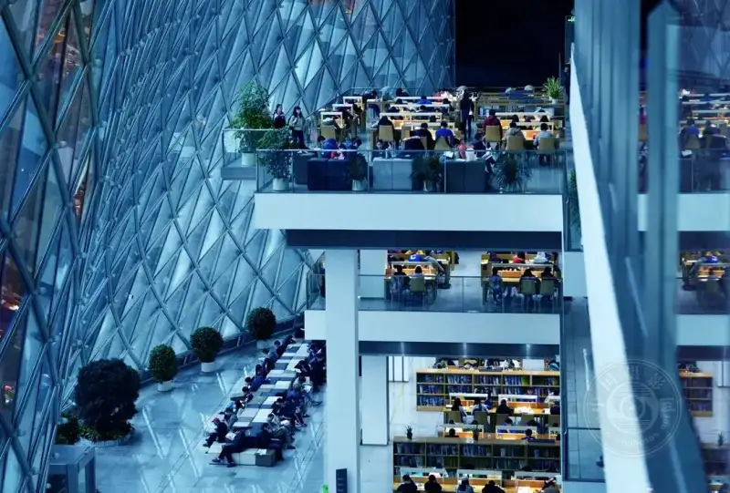
"Dream of Books"
November 11, 2018,
The reading hall of the Shenzhen Library is full.
They keep company with books and search in the ocean of knowledge.
Now reading itself has become a scene.
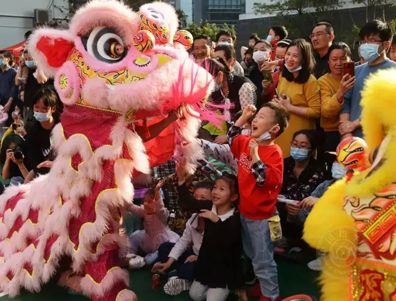
"Praying for Blessings"
February 14, 2021,
The Lions Dance to Welcome the Spring festival was lively.
The children touched the lion's head one after another to bring a good omen.
Zhang Yue: Will you still use photography to pay attention to your hometown?
Shu Hongping:I live in Shenzhen, but I am still a man of Gao'an. Every plant and tree of my hometown is rooted in my heart. They are my sweet memories and my endless care, and a source of creation that never runs dry. Each year, during my limited visits home, I still take up my camera, walk the streets, see the rivers and mountains of my hometown, and record the life of its people. Within the three-kilometer radius where I was born and grew up, the place I know best, I have repositioned myself, found subjects, and dug deep. I have shot series such as The Floating Bridge of My Hometown and Phoenix Lake Park, which have run in print and online. On November 2, 2022, People's Photography ran a full page on The Floating Bridge of My Hometown. My other series, On the Banks of the Jin River, is nearly finished. Together they form my hometown trilogy.
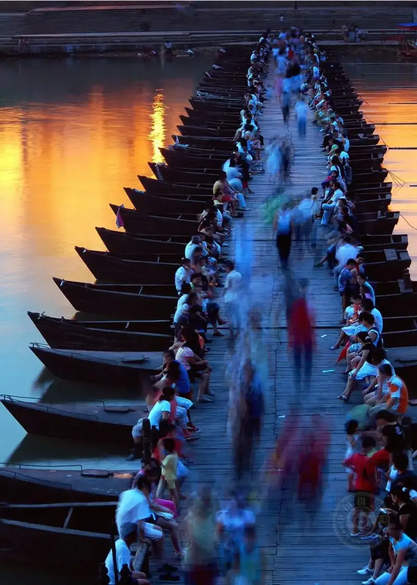
"Evening Song of the Water Town"
August 17, 2008.
In the height of summer, people gather on the floating bridge to cool off and chat about daily life.
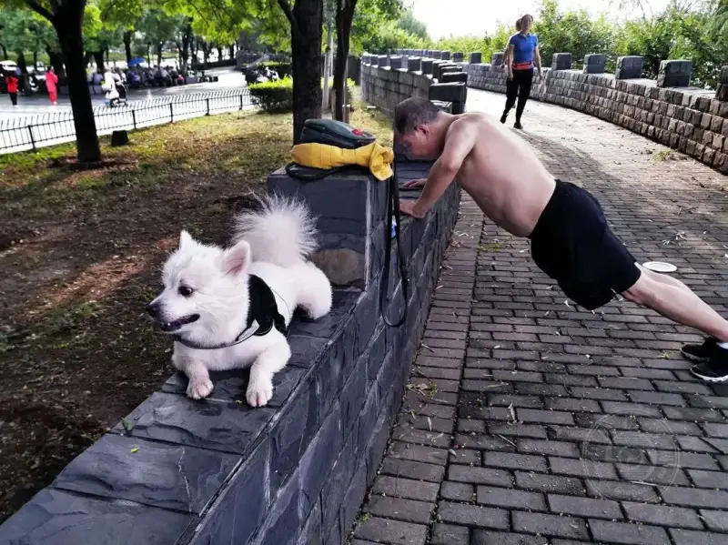
In 2018, at Phoenix Lake Park in Gao'an, residents do their morning exercises.
Zhang Yue: Do you have new long-term plans for your future photography?
Shu Hongping:Photography has become a seed that has taken root, flowered, and borne fruit in my life. I will keep walking my own road and doing what I love, until I can no longer hold a camera.
After I retired in 2015, for a while I joined the crowds to collect material, chasing the poetry and distant places in my heart. I went to far borders such as Inner Mongolia, Xinjiang, and Tibet. I also went to foreign lands such as Southeast Asia and Europe, and shot many photos. I came back fully loaded. But after I settled down and faced each beautiful photo, I compared carefully and thought calmly. I asked myself: where exactly are the poetry and the distant place in my heart? Going to other places or abroad to collect material is not wrong, and not unimportant. When we enter the wide world and learn about foreign ways, it is a useful way to open our eyes, make friends, gain knowledge, and improve. But you should not aim at someone else's land and neglect your own field.
Image
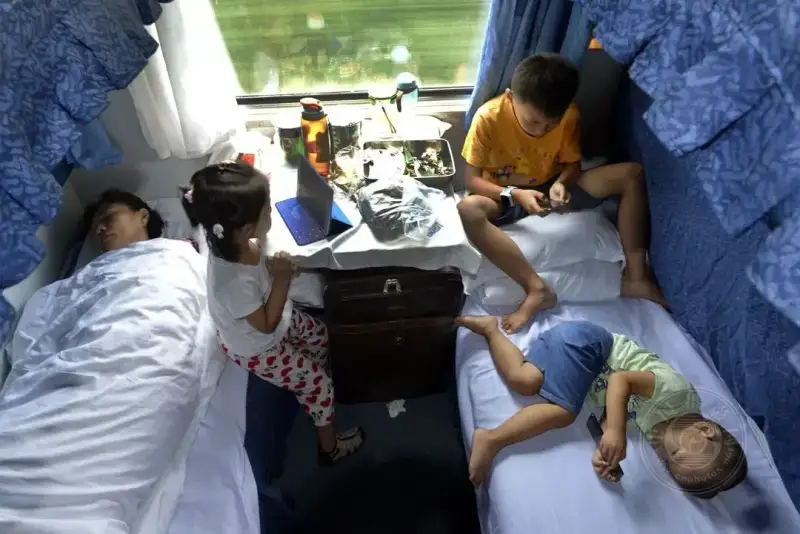
"Each Has Their Own Fun"
August 20, 2017, on the train from Nanchang to Shenzhen.
Parents travel with their children. The three children each play their own way,
lost in their own online world.
In truth, the hometown is where everyone is born and grows, and it holds countless threads of feeling. Especially in the years after I retired and settled in Shenzhen, every time I take up my camera and return home, I feel that my hometown is truly my poetry and my distant place. So as a photographer who came out of Gao'an, I only want to return home. I will keep developing my own ability to see beauty, to search, and to discover. I will use the language of photographic art to better explain the true color of life. I will put my artistic ideas and my feeling for my hometown into my work, and use the lens to tell the stories of my hometown, of Jiangxi, and of China.
Zhang Yue: Your story is wonderful and moving. Thank you for this interview.
Zhang Yue
Reporter for cnphotos.net.
Born in the 1990s, a Chinese woman based in Beijing.
She has published hundreds of thousands of words of arts criticism and political commentary.
She now studies for a master's degree in photography and digital media at the graduate school of the Chinese National Academy of Arts.
She has a special love for documentary photography.